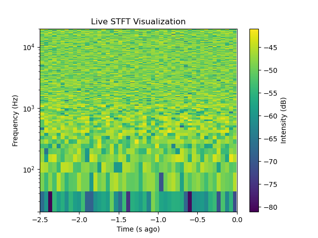

Audio Processing · Assistive Technology
Audio to Haptic Feedback for Hearing Impaired Users
Exploring how real-time audio processing can translate sound into tactile feedback.

Project overview
Sound carries information about the surrounding environment, but an audio-only interface can leave that information inaccessible to people with hearing impairments. This project explores an alternative sensory channel: turning information from incoming audio into haptic feedback that can be felt.
Approach
The focus is a real-time audio-to-haptic feedback pipeline. Audio processing provides a way to examine incoming signals and extract characteristics that can inform a tactile response. The spectrogram illustrates one way of inspecting how a signal's frequency content changes over time.
Why it matters
The project connects signal processing with assistive technology and human-centered design. It explores how information usually presented through hearing can be represented through touch, with the goal of making environmental audio cues more accessible.